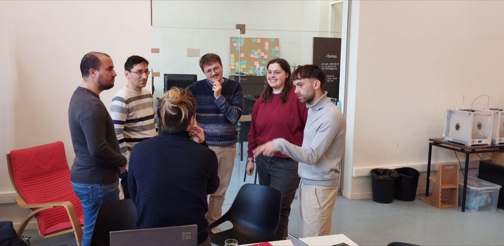

JUL–SEP2024
Primeros prototipos, salidos de la FabAcademy
Los doctorantes Alex Manuel Rivera Rivera y Luis Abel Rodríguez de Torner completan su primera estancia en la Université Libre de Bruxelles y aprueban el curso internacional FabAcademy. Como proyecto final, Rivera presenta un primer prototipo de boya meteorológica y Rodríguez un primer canal de olas a pequeña escala. En paralelo se cierra la lista de compras del futuro FabLab de la Facultad de Física.
Del 15 al 20 de julio, ambos imparten electrónica básica y Arduino en la Escuela de Verano de Física a estudiantes de preuniversitario, y el 17 de agosto el proyecto llega a la televisión nacional en el programa Observatorio Científico.
